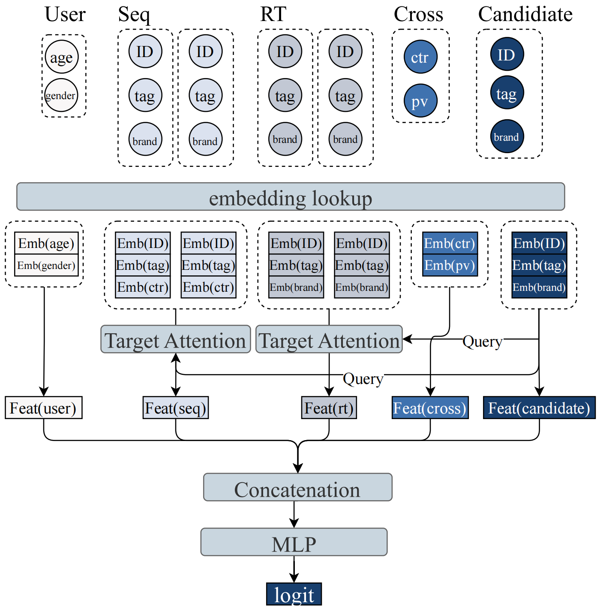
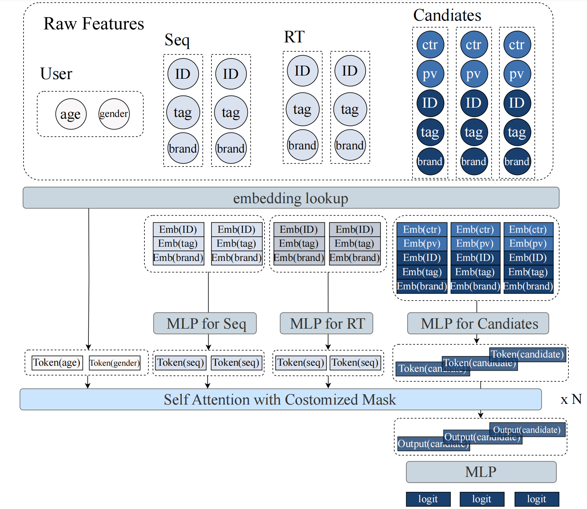
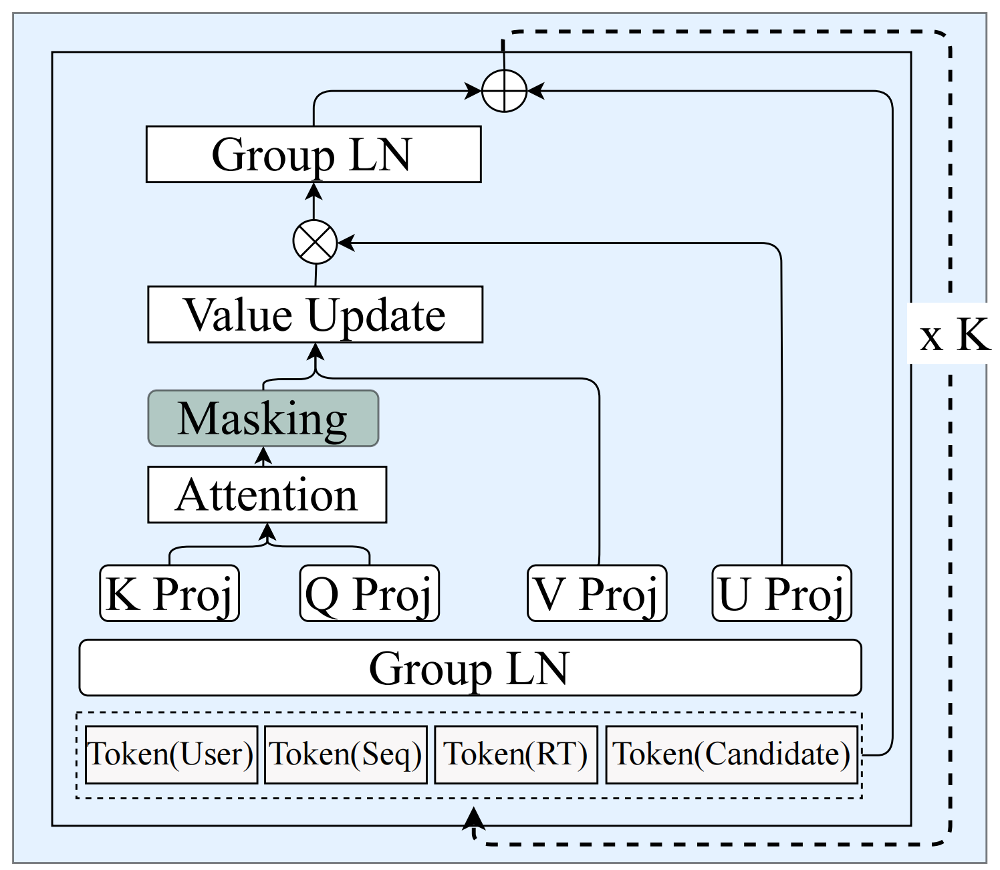
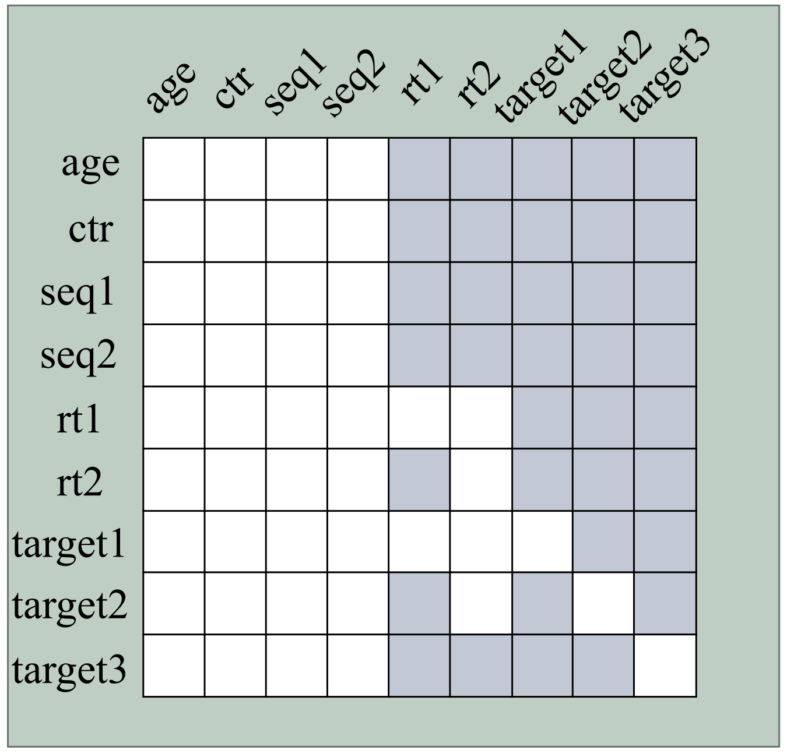

6.3. MTGR: 混合范式建模¶
HSTU证明了推荐模型可以遵循scaling law，GenRank揭示了生成式推荐的本质是自回归机制而非训练范式。这两个工作都朝着”纯粹性”的方向演进，用统一的序列建模替代碎片化的特征工程，用端到端的Transformer替代异构的模块组合。
但这种纯粹性是有代价的。
在HSTU和GenRank的框架中，为了实现完整的行为序列建模，模型在预测用户对候选物品的行为时，不能使用任何候选相关的交叉特征（cross features）。这些交叉特征是工业推荐系统经过多年迭代积累的宝贵经验，如”用户对该类目的历史点击率”、“用户在该时段对此类内容的偏好”、“该物品与用户画像的匹配度”等。它们精确地捕捉了用户与候选之间的细粒度交互模式。
美团团队在实践中发现了一个严峻的事实：去除交叉特征会导致模型性能显著下降，这种下降即使通过大幅增加模型规模也无法弥补。这引出了一个根本性的问题：生成式推荐的用户粒度建模范式，能否与传统DLRM的特征工程经验相结合？
MTGR（Meituan Generative Recommendation）给出了肯定的答案。它的核心贡献不是更快的训练或更低的延迟，而是提出了一种混合范式：在保持用户粒度聚合效率的同时，支持target-aware的判别式建模。这需要对生成式推荐的建模方式进行深刻的重新理解。
6.3.1. 范式的再思考：生成 vs 判别¶
6.3.1.1. HSTU/GenRank的根本假设¶
让我们首先回顾HSTU和GenRank的核心设计。两者都采用了交织式建模，将推荐过程建模为内容和行为交替的序列：
这个序列的联合分布可以分解为：
排序任务对应于建模\(p(a_i | \Phi_0, a_0, \ldots, \Phi_i)\)，即给定历史和当前候选，预测用户行为。这看起来是target-aware的，因为模型看到了候选\(\Phi_i\)。
但问题在于：在这个建模方式中，候选\(\Phi_i\)是序列的一部分，与历史行为\(a_{i-1}\)地位平等。当我们用自回归的方式训练时，位置\(i\)的预测只能依赖位置\(0\)到\(i-1\)的信息。而交叉特征往往需要”跨越”这个顺序依赖，它们需要同时看到用户的某个历史统计（比如”用户在科技类内容的平均停留时长”）和当前候选的属性（比如”这是一个科技类视频”），然后计算两者的交互。 在纯生成式的建模方式下，这种跨越是被禁止的。因为如果允许候选\(\Phi_i\)的表示依赖于”用户对该候选所属类目的历史偏好”这样的特征，就破坏了序列建模的因果性，因为这个特征实际上已经”看到了未来”，因为它是针对当前候选\(\Phi_i\)计算的。
GenRank的action-oriented organization虽然压缩了序列长度，但并没有改变这个根本限制。它仍然将物品作为行为的属性融合到token中，保持了严格的时序依赖。
那么，交叉特征究竟有多重要？美团团队的消融实验给出了明确答案：去除交叉特征后，即使是最大规模的生成式模型，性能也会退化到甚至不如中等规模的传统DLRM。这不是一个可以通过scaling弥补的gap，而是信息本身的缺失。
6.3.1.2. 判别式排序的本质¶
{kind=link}

图6.3.1 传统DLRM的数据组织和工作流¶
为什么交叉特征如此关键？这需要我们重新理解排序任务的本质。
在推荐系统中，排序阶段的输入是明确的：用户的历史行为和一组候选物品。任务是对每个候选预测用户的行为倾向（点击、停留、转化等）。这是一个典型的判别式任务，即给定输入\(x\)（历史+候选），预测标签\(y\)（行为）。
传统DLRM将这个任务formulate为\(p(a | u, i)\)，其中\(u\)是用户表示，\(i\)是物品表示。关键在于，用户表示:math:`u`可以依赖于候选物品:math:`i`。举个例子，“用户对科技类内容的平均点击率”这个特征，只有在候选是科技类物品时才有意义。这是一个\(u \times i\)的交互，是二阶甚至更高阶的特征交叉。
更进一步，很多重要的信号来自于”条件统计”：
用户在该时段对此类内容的历史行为
用户在该地理位置对此类商家的偏好
该创作者的内容对这类用户的吸引力
这些特征的共同点是：它们需要同时观察用户的某个子集历史和候选的某个属性，然后在这个条件下计算统计量。这种条件依赖在生成式建模方式中很难自然地表达。
从概率建模的角度，判别式任务关心的是\(p(a | 历史, 候选)\)的条件分布，而不需要建模完整的联合分布\(p(历史, 候选, a)\)。生成式方法通过分解联合分布来得到条件分布，但这带来了额外的建模负担：你必须建模\(p(候选 | 历史)\)，即使这不是你真正关心的。
MTGR的核心洞察是：用户粒度建模带来的效率提升，本质上来自于样本聚合和计算复用，而不一定要求完整的生成式建模。
6.3.1.3. MTGR的核心洞察¶
MTGR提出了一个看似矛盾实则巧妙的方案：使用生成式模型的架构（Transformer + 用户粒度聚合），但保持判别式的建模目标。
具体来说，MTGR将同一用户的多个候选聚合到一个样本中，形成这样的数据组织：
关键的差异在于：
历史部分（User, Seq, RealTime）与HSTU/GenRank一致，是用户的完整行为序列
候选部分（Cross, Item）不再是历史的延续，而是待预测的目标，且每个候选的表示中直接包含了交叉特征
这个建模方式打破了”内容-行为交替”的严格时序结构。它承认：在排序阶段，候选物品是给定的输入，不是需要生成的中间状态。因此，我们可以为每个候选构造针对性的特征表示，包括那些依赖于用户历史统计和候选属性交互的交叉特征。
从token组织的角度看，各部分含义如下。
User tokens：用户的静态属性（年龄、性别、城市等）
Sequence tokens：用户的历史交互序列（长期行为）
RealTime tokens：用户的近期交互（短期行为）
Candidate tokens：每个候选一个token，融合了物品特征和交叉特征
这种组织方式仍然保留了用户粒度聚合的核心优势：对于\(m\)个候选，用户历史部分（User + Seq + RealTime）只需要编码一次，\(m\)个候选token并行处理。计算复杂度是\(O((n + m)^2)\)而非\(O(m \cdot n^2)\)，当\(m \ll n\)时带来显著的效率提升。
但与HSTU/GenRank不同的是，MTGR不再追求建模完整的行为序列。它只在候选位置计算loss，预测用户对这些候选的行为。这是一个判别式目标，允许候选的表示中包含任意的用户-物品交叉信息。
这个设计的哲学是：区分手段和目的。生成式架构（Transformer + 序列建模）是一种强大的表征学习手段，但不一定要服务于生成式的建模目标。用户粒度聚合是一种高效的计算组织方式，但不一定要求完整的因果序列。MTGR通过这种混合范式，在保持效率的同时，恢复了判别式建模的灵活性。
{kind=link}

图6.3.2 MTGR的数据组织和整体工作流¶
上图展示了MTGR如何将多个候选聚合到同一个样本中。3个候选的特征与用户特征聚合，特征经过embedding和MLP转换为token序列。用户特征（age、gender）、历史序列（Seq）、实时序列（RT）和候选特征（包含交叉特征ctr、pv）被统一处理。经过self-attention后，候选token的表示通过MLP输出logit用于排序。注意候选部分的特征包含了交叉特征（如ctr、pv），这些特征同时依赖于用户历史和候选属性，这是MTGR相比纯生成式方法的关键优势。
6.3.2. 架构创新的原理¶
混合范式的思想很清晰，但实现起来面临新的挑战。当我们将历史序列和候选物品放在同一个Transformer中处理，但它们承担着不同的角色、具有不同的语义时，如何确保模型能够有效地学习？MTGR提出了两个关键的架构创新。
6.3.2.1. 特征到Token的映射¶
在传统DLRM中，不同类型的特征通过不同的模块处理：sparse features通过embedding lookup，dense features通过MLP，序列特征通过attention，然后在某个阶段concatenate。这种异构性虽然灵活，但也导致了参数利用效率的问题。
HSTU和GenRank的一个重要贡献是特征空间的统一：所有信息编码为token序列，用统一的Transformer处理。但当我们要在这个统一框架中引入交叉特征时，问题出现了。
考虑一个具体的例子。假设我们要对以下3个候选物品排序。
候选1：一个科技类视频，用户对科技类内容的历史点击率是0.8
候选2：一个美食类视频，用户对美食类内容的历史点击率是0.3
候选3：一个科技类视频，用户对科技类内容的历史点击率是0.8
注意候选1和候选3的交叉特征是相同的（都是科技类，同一个用户），但它们是不同的候选，应该独立评分。
MTGR的做法是：对每个候选构造一个独立的token，这个token的表示融合了以下信息。
物品的固有特征：ID、类目、标签、时长等
交叉特征：用户对该类目的历史点击率、在该时段对此类内容的偏好等
位置和时序信息：该候选在列表中的位置、曝光时间等
形式化地，对于候选\(i\)：
这里关键的设计决策是：交叉特征被视为候选表示的一部分，而不是历史序列的一部分。这意味着，即使候选1和候选3的交叉特征相同，它们仍然生成两个独立的token，因为它们可能在其他维度（如具体的物品ID、标题等）不同。
相比之下，用户历史部分的token生成要简单得多，各token对应关系如下。
User tokens：每个用户属性特征对应一个token
Sequence tokens：历史交互序列中，每个物品对应一个token
RealTime tokens：近期交互中，每个物品对应一个token
这些token都是”纯粹的”，不依赖于任何候选信息，只编码历史。
这种非对称的token组织带来了一个问题：不同类型的token在语义上处于不同的空间。用户属性token编码的是人口统计学信息，序列token编码的是行为模式，候选token编码的是物品特征加上交叉信息。如果直接用统一的Transformer处理，不同语义空间的token会相互干扰。
6.3.2.2. Group Layer Normalization的必要性¶
Layer Normalization是Transformer的标准组件，它在每个token的特征维度上进行归一化：
其中\(\mu\)和\(\sigma\)是在特征维度上计算的均值和标准差。标准的LayerNorm假设所有token共享相同的特征分布，因此使用全局的归一化参数\(\gamma\)和\(\beta\)。
但在MTGR的设定下，这个假设被打破了。考虑一个batch中的token序列：
Age token的激活值分布是什么样的？它经过embedding lookup后，通过几层Transformer，可能主要编码”这是一个年轻用户”或”这是一个中年用户”这样的离散信息。
Sequence token呢？它编码的是”用户\(t\)天前看了某个视频”，经过attention后，可能主要反映”这个视频对当前预测的重要性”。
Candidate token？它融合了物品特征和交叉特征，可能主要反映”这个候选与用户历史的匹配程度”。
这三类token的激活值分布可能有显著的差异，不仅是均值和方差不同，甚至不同维度的语义都不同。如果用全局的LayerNorm，会发生什么？
假设Age token的激活值在[-1, 1]范围内，而Sequence token的激活值在[-5, 5]范围内（因为经过了更多层的累积）。全局LayerNorm会计算所有token的均值和方差，然后归一化。这会导致： - Age token被”过度放大”，因为全局方差被Sequence token拉高了 - Sequence token被”过度压缩”，因为全局均值被Age token影响了
更严重的问题是语义的混淆。不同类型的token在相同维度上可能编码完全不同的信息。比如维度100，在User token中可能编码”用户的活跃度”，在Candidate token中可能编码”候选的热度”。全局归一化会将这两个语义混在一起，削弱模型的表达能力。
MTGR提出的Group Layer Normalization (GLN) 解决了这个问题。核心思想很简单：不同类型的token分组归一化。
具体来说，将token序列划分为以下几个group。
Group 1: User tokens
Group 2: Sequence tokens
Group 3: RealTime tokens
Group 4: Candidate tokens
在每个group内部独立计算均值和方差，使用独立的归一化参数：
其中\(g(i)\)表示token \(i\)所属的group。
{kind=link}

图6.3.3 MTGR的Self-Attention模块结构¶
这个设计有两个好处：
第一，分布对齐。每个group内部的token语义相近，分布相似，独立归一化可以更好地稳定训练。不同group可以有不同的激活值范围，不会相互干扰。
第二，语义独立。不同group的token在相同维度上可以编码不同的信息，归一化参数的独立性保证了这种语义的独立性。
从实现角度，GLN只是在LayerNorm的基础上增加了group信息，计算开销几乎可以忽略。但从原理上，它承认了一个重要事实：在混合范式中，不同类型的信息应该在表示空间中保持相对独立，而不是强行统一。
这个设计原则也体现在MTGR的其他地方。比如，不同group的token可以使用不同维度的embedding，可以在不同层进行不同的处理。这种”有控制的异构性”，是在统一架构和特征灵活性之间找到的平衡点。
6.3.2.3. Dynamic Masking：超越Causal Mask¶
Transformer的自注意力允许任意token之间交互，但在序列建模中，我们通常需要限制这种交互以满足因果性约束。HSTU和GenRank都使用causal mask（下三角mask），确保位置\(i\)的token只能看到位置\(0\)到\(i-1\)的信息。
但在MTGR的混合范式中，causal mask不再适用。原因在于token序列不再严格按时间顺序组织。
回顾MTGR的token组织：
这个序列中：
User tokens是静态的，不涉及时序
Seq tokens是历史行为，已经按时间排序
RealTime tokens是近期行为，也按时间排序，但可能与候选曝光时间重叠
Candidate tokens是并行的候选，不应相互可见（因为实际曝光时用户一次只看一个）
如果简单地使用causal mask，会出现问题。假设序列长度为\(n + m\)（\(n\)个历史token，\(m\)个候选token），causal mask意味着：
Cand\(_1\)可以看到User, Seq, RealTime，以及它之前的所有token
Cand\(_2\)可以看到User, Seq, RealTime，以及Cand\(_1\)
Cand\(_3\)可以看到User, Seq, RealTime，以及Cand\(_1\), Cand\(_2\)
但候选之间的可见性是不合理的。在实际推荐场景中，用户看到候选1后的行为，不应该影响我们对候选2的预测，因为在训练时，候选1和候选2是在不同时刻曝光的（只是被我们聚合到同一个样本中），而在推理时，我们需要同时对所有候选评分。
更复杂的是RealTime tokens的处理。这些token记录用户在近期窗口（比如最近1小时）内的交互。在训练时，如果我们将一天内的多次曝光聚合到一起，RealTime部分可能包含了某些候选曝光之后的交互，这会导致信息泄露。
举个具体例子。假设：
12:00，用户看到候选A（科技视频），点击了
12:30，用户看到候选B（美食视频），没点击
13:00，用户看到候选C（科技视频），点击了
如果我们将这三次曝光聚合到一个样本中训练，RealTime部分可能包含：
RT\(_1\): 12:00的点击（候选A）
RT\(_2\): 13:00的点击（候选C）
当预测候选B（12:30曝光）时，模型不应该看到RT\(_2\)（13:00的点击），因为这发生在候选B之后。但在一个聚合的样本中，RT\(_2\)已经在序列里了。
MTGR提出的Dynamic Masking通过细粒度的可见性控制解决这些问题。它定义了以下三条规则。
规则1：静态序列对所有token可见
User和Seq tokens被视为”静态”，因为它们来自聚合窗口之前的历史。任何候选都可以attend到这些信息，这是合理的，因为用户的长期历史对所有候选的预测都有意义。
在attention mask矩阵中，User和Seq对应的列全是1（可见）。
规则2：动态序列遵循因果性
RealTime tokens是”动态”的，它们的时间戳可能在聚合窗口内，与候选曝光时间有先后关系。具体可见性规则如下。
RT\(_i\)对RT\(_j\)的可见性取决于时间戳：如果\(t_i < t_j\)，则RT\(_i\)对RT\(_j\)可见
RT\(_i\)对Cand\(_k\)的可见性也取决于时间戳：如果\(t_i <\) Cand\(_k\)的曝光时间，则可见
这在mask矩阵中表现为：RealTime tokens之间是causal mask（下三角），RealTime tokens对Candidate tokens的可见性根据实际时间戳动态决定。
规则3：候选之间相互独立
Cand\(_i\)对Cand\(_j\) (\(j \neq i\))不可见，保证候选评分的独立性。在mask矩阵中，Candidate blocks之间是对角mask（只有对角线元素为1）。
这三条规则综合起来，形成了一个复杂但精确的mask模式。下图展示了一个具体的例子：
{kind=link}

图6.3.4 MTGR的定制化Mask机制¶
这个mask不是预先固定的，而是根据每个样本中token的实际时间戳动态生成的。这就是”Dynamic Masking”名字的由来。上图中白色区域表示可见，灰色区域表示不可见。可以看到：
用户特征（age、ctr）和历史序列（seq1、seq2）对应的列全为白色，说明对所有token可见
实时序列（rt1、rt2）按照时间戳遵循因果关系，形成部分的三角结构
候选（target1-3）之间只有对角线可见，仅对自己可见，确保候选评分的独立性
这种动态mask根据实际时间戳生成，避免了信息泄露。
从原理上，Dynamic Masking体现了MTGR对时序建模的细致理解：
对于真正静态的信息（长期历史），充分利用，允许全局可见
对于动态信息（近期交互），严格遵守因果性，根据实际时间戳控制可见性
对于并行的目标（候选），保持独立性，避免相互干扰
这种设计在训练和推理时都适用。训练时，它防止信息泄露，确保模型学到真实的因果关系。推理时，它允许同一个请求中的所有候选并行处理（因为RealTime只包含请求之前的交互，候选之间相互独立），保持了计算效率。
Dynamic Masking是MTGR混合范式的最后一块拼图。它让模型在统一的Transformer架构中，同时处理因果序列（历史行为）和非因果目标（候选评分），在灵活性和正确性之间找到了平衡。